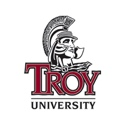
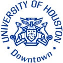
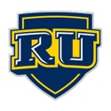
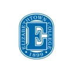
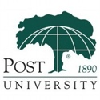
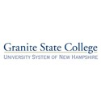
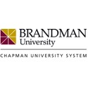
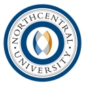
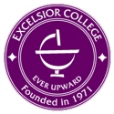

The Top 50 Schools for Adults Going Back To College

In recent years, the fastest growing population of college students are over the age of 25 – adults who wish to advance their careers, dropped out of or never attended college, single parents, military, and those looking to better their life are all choosing higher education. According to the National Center for Educational Statistics, between 2000 and 2011 enrollment of students over the age of 25 rose by 41%. Regardless of the reason for pursuing higher education, we here at Best College Reviews have compiled a ranking of the schools that help make the college dream a reality by rating what adults are looking for in a college: flexibility, transfer options, online classes, and acceptance rate.
This ranking was based on the following criteria:
• Percentage of students over the age of 25
• College acceptance rate
• Percentage of students enrolled in distance education
• Flexible options
Statistics for this ranking were gathered from the National Center for Education Statistics and Peterson’s.
50. Florida International University

If the size and academic options are priorities, Florida International University delivers as it is the 5th largest university in the United States. FIU offers 180 programs of bachelor’s, master’s, and doctorate’s in 12 colleges and schools that serve the needs of nearly 55,000 students, about 8000 are enrolled in graduate programs. It was founded as in 1965 and is a public research university winning honors for their outcomes and many great programs. For adult and continuing education the same applies. There are currently 12 bachelor’s degrees offered completely online. For adults looking to continue their education, add to their credentials, or complete a certificate program, FIU is also flexible and practical. Most FIU online courses are offered over a six-week period and take between 36 and 40 hours to complete. Certificates normally consist of three courses and are completed in about six months.
49. Northeastern Illinois University

Northeastern Illinois University is a public university with over 12,000 students. NIU is a federally designated Hispanic Serving Institution, and 45% of students are over the age of 25. With almost half of the student population over the age of 25, Northeastern Illinois University offers flexible options for adult students. The Weekend Institute for Professional Development provides undergraduate students with course offerings on Friday evenings as well as Saturdays at three different sites. This allows working students to attend classes and receive higher education outside of the work week. In addition to the Weekend Institute, the University offers hybrid courses that combine face-to-face sessions with online instruction, online courses that can be fully completed from home, and videoconferencing courses that are delivered through a two-way interactive video teleconferencing network. With so many flexible options, it is no wonder that Northeastern Illinois University is a leader in adult education today.
48. Texas A & M-Commerce

Texas A & M-Commerce is located in the Metroplex (Dallas-Fort Worth area) and has multiple branch locations. If choice is desired, Texas A & M-Commerce fulfills. With over 100 majors in bachelor’s, master’s and doctorate’s, the university attracts many students with over 12,000 to date. For adult learners the University offers great choice, convenient locations, affordable tuition (varies for in or out-of-state), and top-notch technology and facilities. There are many options at Texas A & M-Commerce; one example is the BAAS in Organizational Leadership. It is tailored for the adult learner with 7-week courses, a flat tuition, online, built in accelerated completion based on competency, and great partnerships with businesses. There are currently 47% of student enrolled in some form of distance learning, though classes are offered alongside regular semester courses.
47. Tiffin University
Tiffin University is ready to help students who have a full-time job and want to complete their degree at their own pace and on their own time. Through Tiffin’s online and off-campus programs, students can obtain a college degree while working. Online programs start every January, March, May, July, August, and October, making it easy for students to begin when it best suits their schedule. Classes are small, and one semester hour is waived from freshman studies. Students may enroll in several classes, or one class at a time, depending on their needs and availability. To earn a bachelor’s degree, students must complete 121 credit hours. Also to note, Tiffin’s partnership with community colleges through a dual-enrollment program allows for easier credit transfer, as well as the potential to take some credits at the community college level.
46. Ursuline College

Ursuline College is known for its excellent academic reputation. From its founding in 1871 as a women’s college, it is one of the oldest institutions of higher education for women in the United States today. With its commitment to education, Ursuline College has expanded to reach adults who are ready to complete their college education through the Ursuline College Adult Program. Designed for students who have at least 30 hours of college credit, this bachelor degree completion program is tailored to the needs of busy adult men and women. Students transferring into this program will benefit from the liberal transfer policies and possible credit for professional work experience. Classes are offered in an accelerated five-week format that allows students to earn up to 27 credit hours per year. These short, five-week sessions allow the flexibility for stepping out of the program for five weeks without disrupting the progress towards degree completion.
45. Oregon Institute of Technology
Located in the heart of southern Oregon, Oregon Institute of Technology provides an excellent education combined with the beauty and ample recreation that rural Oregon has to offer. Known for its outstanding reputation in health technology education, the partnership Oregon Tech has with the local hospital make this the perfect place for students looking to go into the medical/health-care field. Oregon Tech Online offers convenient programs for working adults; those registered or licensed in an array of health care management systems may further their education or complete their degree online. Oregon Tech is one of the few universities in the country, and the only school in the Pacific Northwest that offers web-based bachelor’s degree programs in high-demand health technologies.
44. Campbell University

Campbell University is a Christian school located in North Carolina. There are about 6000 total students but have adult and military-friendly, flexible 8-week online degrees programs, evening, summer, and weekend classes that students can earn associate’s, bachelor’s, or master’s degrees. These options vary according to four different locations. Campbell University also accepts transfer credits from multiple community colleges and universities, as well as the military, and even allows credits to be earned by various evaluation tools. A testimonial from their website communicates what many adult learners are looking for: “I was 32 years old with a full-time job, three kids, and no college degree. There were very few offerings from reputable universities to earn a four-year diploma. The evening, online, and blended classes offered by Campbell RTP created the flexibility I needed while at the same time providing comprehensive and challenging courses.”
43. Cedar Crest College

Cedar Crest College has a flourishing Adult Education program. Adults wishing to complete a degree already started, or who have never been to college before can choose from many different majors including accounting, marketing, business administration, applied psychology, nursing, nutrition, social work, early childhood education, art, criminal justice, Spanish, and others. Through the School of Adult and Graduate Education (SAGE) program, Cedar Crest provides adults with the assistance, aid, and flexible scheduling needed to earn a degree or certificate to advance their career. Scheduling options include accelerated degrees, complete online degrees, and online courses. Regardless of the path a student chooses, Cedar Crest lives up to its mission to “support the career interests and educational goals of men and women throughout every step of their professional development.”
42. King University
King University is ready to meet the world head-on as they strive to keep up with the fast-paced world of online education. Founded in 1867, King University is one of the leading online universities in Tennessee today. Offering adults flexibility combined with an excellent education, King University works with students to meet their individual educational goals. Students may take one course at a time, attending only one day or evening per week, making it easy for the working adult to earn a degree. King has 14 onsite locations throughout Tennessee and southwest Virginia, or students can complete their degree online. Online degrees include an Associate of Arts, 13 different bachelor’s degree programs, a Master of Business Administration, and a Master of Science in Nursing.
41. Rochester College

Rochester College, renamed in 1997 from Michigan Christian College, was founded in 1959 by the Churches of Christ. The founders wanted give the school “…the task of leading students toward higher academic achievement [and] the development of Christian ideals.” This small four-year liberal-arts college of about 1100 students has a flexible adult education program. The Adult Accelerated Program, which is designed to fit work and family schedules, offers classes online and cohort on-campus groups to help transition back into student life, and allows students to complete their degree in as little at 12-18 months. The school website has an article about the success of the adult education at Rochester with a member of our U.S. Navy that is informative from a personal perspective. A particular highlight of it is how the school is very military friendly and enrolled in the 9/11 GI Bill in 2010.
40. Monroe College

Named after the fifth President of the United States, Monroe College is located in the Bronx, New York. Monroe College began to offer online course in 2004, and has continued to expand their distance education program to include associate’s, bachelor’s, and master’s degrees; 62% of students at Monroe participate in distance education. Through this flexible program, students may easily create a blended schedule that combines online classes with those being held on campus. The goal of Monroe College’s online program is to offer students a personal experience, even though they are not always on campus. Every new online student begins their studies on campus with a welcome orientation, introducing the students to the campus and faculty, ensuring students won’t be lost in the virtual world. Online students have full access to and are encouraged to use Monroe’s libraries, study centers, recreational and career facilities. It is notable that though online students study from home they are a welcomed part of the Monroe community.
39. Life University

Life University is located in historic Marietta, a suburb of Atlanta. LU provides the double benefits of a big city with the serenity of the beautiful outdoors found along three miles of walking trails meandering through the campus. With this pleasant setting, it is no wonder that 45% of Life University students are over the age of 25; all of the campus activities and resources are centered around a health and wellness lifestyle, based on each student’s individual goals, investment, and focus. Not only does Life University provide an excellent physical location, Life Online strives to give students a chance at an individualized education on and off campus without the constraints of time or distance. As the online programs at Life continue to expand, so does the unique opportunity that Life University offers.
38. Clayton State University

A tech-friendly school in the South, Clayton State University, offers “career-oriented education with a solid liberal arts foundation.” Founded in 1969 as a Junior College, CSU has grown to an enrollment of nearly 7000 students and offers degrees in most fields of studies at different levels. In 1998, the “Information Technology Project” transformed the campus by issuing all students notebooks, a first for universities in the Southwest. Their online options are excellent, they offer a B.A.S in Homeland Security, a Master’s in Nursing, B.S. in English, and a Web B.S. in Information Technology. Overall, with 45% of adult learners engaged in distance education, 49% of undergraduates over 25, and a 50% acceptance rate, Clayton State University is a balanced choice.
37. University of Utah

The University of Utah has a plethora of programs that adults won’t be disappointed in. Whether it is taking courses for academic credit, auditing courses, distance learning, the English Language Institute, the Go Learn program, House Bill 60 for residents over the age of 62, technology education, or Life Long Learning classes, the University of Utah has it all. The Osher Lifelong Learning Institute provides opportunities for those over the age of 50 to take non-credit classes while participating in an intellectually stimulating, affordable, socially engaging institution. Regardless of age, options abound at the University of Utah.
36. Bluefield State College

Bluefield State College is located in West Virginia and is a member-school of the Thurgood Marshall College Fund. Bluefield began modestly with 40 pupils and now offers degrees and programs to in six schools: Arts and Science, Business, Education, Engineering, Computers, and Nursing. If affordability is a concern, Bluefield offers the most affordable in-state tuition of all public four-year colleges and universities within a 200-mile radius. Interestingly, they have initiated two new degree programs—the Bachelor of Science in Engineering Management and the Bachelor of Science in Imaging Science: Ultrasound Concentration. Their distance education can be completely online or blended and uses Moodle and Blackboard and currently 61% of students are educated in this manner.
35. Fresno Pacific University
Located in the Central Valley region of California, Fresno Pacific University has a beautiful 42-acre campus that serves as the main campus, as well as four other campuses in the region. Fresno Pacific University has expanded beyond the boundaries of a physical campus and offers excellent, convenient, and quality online programs. Whether the student needs degree completion, or an online graduate degree, the university is prepared to walk their students through the process. With dedicated faculty and staff who are willing to work with long-distance learners and excellent on-campus programs for adult students, FPU recognizes and values adult students while providing an excellent education with help every step of the way.
34. Fisher College

Fisher Logo Blue Vector
Originally founded as a vocational and business school in 1903, Fisher College is now a private, independent school of 1100 students located in Boston, MA. Fisher has three satellite locations North Attleborough, Brockton, and New Bedford. Fisher has exceptional online classes though a limited choice of degrees. The Division of Accelerated and Professional Studies (DAPS) program is designed particularly for adults and continuing learners, and there are options for accelerated degrees. They have 8 week semesters and offer good financial aid packages for adult learners. Fisher is also very military-friendly providing benefits and discounted tuition. For example, their Military to Management online programs tuition per credit hour is $250 for those that qualify. Overall, the personalized experience of the small school and quality online programs make Fisher a quality choice.
33. University of Arkansas – Little Rock

The University of Arkansas-Little Rock is a public research university located in the capital city of Arkansas. A hub of research and professional education, 54% of the students at the University of Arkansas-Little Rock are enrolled in distance education. With more than 300 online courses offered each semester, students have the opportunity to receive a high-quality college education from the comforts of their own home. The courses are taught by the same faculty who teach on campus, making it simple for a student to take classes both on-campus and online. In addition to regular online classes, the University also offers accelerated online courses for both undergraduate and graduate degree programs. The seven-week accelerated classes move twice as fast as regular semester-length courses resulting in more opportunity to focus on each course while taking fewer courses at one time.
32. Metropolitan College of New York

The majority of students at the Metropolitan College of New York are adults who have never attended college or who stopped attending college due to other obligations. The college’s curriculum is specially designed to accommodate the adult student, with flexible schedules, small classes, individualized learning, free tutoring services, and online classes. Many adults work full-time while earning their degree. Metropolitan College of New York also offers one of the only curriculum that enable a student to complete a fully accredited bachelor’s degree in 2 years and 8 months and a master’s degree in as little as one year. The curriculum also offers the opportunity to have several different internships or employment opportunities, giving students the chance to get real-life experience while earning credits. It is no wonder that the Metropolitan College of New York is a top choice for adult education today.
31. Rivier University

A private Roman Catholic institution, Rivier University was founded by the Sisters of the Presentation of Mary in 1933. There are over 2,500 students who attend Rivier University, and 41% of them are over the age of 25. Rivier’s Professional Studies Division offers students the opportunity to participate in online and evening programs, making this an excellent choice for the adult who is looking to begin or further their college education. Students can take advantage of evening and online classes while working full-time and 89% of students who apply are accepted. Teacher Education is the largest major, and comprises 30% of undergraduates, while the second largest major is Nursing, which comprises 26% of undergraduates; other popular majors include Psychology, Business, and Criminal Justice.
30. Weber State University

Adults looking to complete their degrees will profit from one of Weber State University’s distance learning programs. Students can choose from online, evening, or hybrid programs, making earning a degree a reality. Through Weber’s self-paced courses, students may start at any time, even in the middle of a semester. There are over 190 classes to choose from; students may set their own deadlines and take up to six months to complete the course. This ultimate flexibility is the perfect solution for the working mother or adult trying to earn a living. While the self-paced online program offers ultimate flexibility, students who are looking for more courses may enroll in the semester-based online program and choose from over 250 courses. Weber State University is ready to assist adults looking to forward their education.
29. St. Mary of the Woods College

Attending St. Mary of the Woods College in Indiana is to be steeped in historic architecture and rich traditions. Founded in 1840, this small, liberal-arts school for women has 40 years of distance learning experience. Combined that with their strong academic core and the student-faculty ratio of 11:1 and it is easy to see why St. Mary’s produces strong graduates and their adult education is very strong. Some majors are available in an 8-week or 16-week formats and it is possible to incorporate individual courses from both formats in a single semester. The Yellow Ribbon Program combined with the Post-9/11 GI Bill gives veteran students who qualify a chance to attend tuition-free. There are many different majors to choose from: Business, Biology, Computer Information Systems (CIS), Journalism and Media Studies, Music Therapy, and Psychology just to name a few. St. Mary’s is also known for their strong equine program and offers multiple majors therein. There are 54% students over 25, and 58% of students are engaged in distance education.
28. Hawaii Pacific University

The largest private university in the central Pacific, Hawaii Pacific University meets the needs of all students, including the adult learner. The Military Campus Program and Off-Campus Program specialize in helping military service members, their families, veterans, U.S. government civilians, and other non-traditional students achieve their educational goals. Recognizing the need for flexibility Hawaii Pacific uses traditional and distance learning courses to educate their students. Through Self-Paced Online courses set up for individualized study, students may work at their own pace with no due dates other than the completion of the course. This allows learning while meeting the demands of life: children, work, travel, and other obligations. Hawaii Pacific offers a well-rounded, liberal arts education with the flexibility required by the adult learner.
27. Bethel University
Bethel University offers a General Studies program that provides adult students with a solid foundation in core curriculum for the first two years of college. For the adult who hasn’t previously attended college, they will become well-rounded in fine arts, history, social sciences, writing, and math as they lay a foundation for a future career. Professors at Bethel University love working with adult undergraduates as they understand the commitment and sacrifice required to learn and meet the demands of life. BU has 68% of students over 25, thus making the learning environment conducive to adults. Bethel University offers associate’s degrees, bachelor’s degrees in Accounting, Business Management, Christian Ministries, Human Services, Nursing, and Organizational Leadership.
26. University of Great Falls
The University of Great Falls offers several ways to help students earn their degrees from the comforts of their own home while adapting to the busy schedule of working adults. One option is for students to attend regularly scheduled, live interactive Microsoft Lync discussion sessions. Another option is to participate in Moodle, an internationally known learning platform that is being used by over 60,000 different institutions in over 230 countries. Moodle allows students to participate in class “asynchronously”, or not at the same time. This offers students the ultimate flexibility for the working adult. Distance learning classes are small and use different technologies and methods to ensure student achievement. The University of Great Falls provides several complete degrees and over one hundred courses every year via distance learning. With so many options, it is no wonder that 56% of the university’s students participate in some form of distance learning.
25. Troy University

The motto of Troy University is to “Educate the mind to think, the heart to feel, and the body to act.” Founded in 1887 to train teachers, Troy University now enrolls 20,000 total students at 4 campuses, with sites in the U.S. and internationally. Troy offers 46 bachelor’s degree programs, 22 master’s degree programs, and 2 doctoral programs. When it comes to adults continuing or starting fresh, flexibility is the key word. At Troy professionals can continue their education or new students over 25 can start down a new path. The Professional Development Institute (PDI) is designed to provide targeted training to professionals in multiple industries and has helped over 20,000 people advance in their careers. The Adult Education program is flexible to fit the needs of the learners: online, in-class, or blended. Students can also decide if they want an accelerated program, semester, trimester, or session format, as well as the location of their learning and the multiple options of associates and bachelor’s degrees. If flexibility and choice is on top of the “how-to-decide” list, Troy University delivers.
24. Upper Iowa University
Students at Upper Iowa University have great flexibility and choice through their Online Program or the Self-Paced Degree Program. Adult students have global access with no need to be on campus. The Center for Distance Education serves over 3,000 students from around the world. The asynchronous courses allow students to attend class anytime during the day or night, making it easy for the adult with a busy schedule. The Online Program offers six eight-week terms every year so that students never have to wait more than two months to start classes. Classes require active participation in discussions on course topics that enhance student learning – all from the comforts of home. Regardless of a student’s situation in life, (work, children, family, or health issues) Upper Iowa University provides the support and flexibility to make earning a degree an attainable goal.
23. Cameron University

Cameron University is proud to offer an “Electronic Campus” where students may take online courses as an expansion of traditional courses offered at the university. One way students may participate in this program is to take Interactive Television Courses or study through Educational Outreach Programs. Students may incorporate these options with online and hybrid courses to find a program that meets their individual educational needs. There are many flexible alternatives at Cameron, which is just one reason 40% of Cameron students are enrolled in distance education. In order to assist students who are earning their degree from a distance, Cameron University offers students eight free hours of tutoring through www.tutor.com. With 41% of Cameron students over the age of 25, this university is suited to help adult learners earn their degrees.
22. The University of Houston – Downtown

The second largest university in the Houston area with over 14,000 students, the University of Houston – Downtown is one of four public universities in the University of Houston System. UH-D offers many options for non-traditional students through off-campus programs. Whether it is online courses, live video instruction, hybrid courses, or traditional classroom instruction at a satellite campus, choices are plentiful for those driven to complete a college education. Students may take single courses or entire degree programs with the majority of instruction occurring remotely. Off campus, learners can take advantage of the academic support and student services available to all UHD students. Distance courses are a great choice for working adults; they are as rigorous and content rich as courses offered in traditional classroom settings.
21. Regis University

Beginning with a group of exiled Italian Jesuits living in New Mexico, Regis University has a “values-centered education that shapes intelligent decision-making and strengthens commitment to community service.” Regis educates about 15,000 students. The adult education at Regis is delivered in accelerated 5 and 8-week terms that start six times a year. Their College of Professional Studies helps adult learners find the right degree, learning format (online, on campus, directed learning, or a combination) and time frame. There are many different options for degrees. However, not all are offered in all three of the learning formats (online, campus-based, directed learning). Regis accepts 76% of applicants and over 60% of students are over 25 thus making it a fitting choice for adult education.
20. Brenau University

Brenau University offers a quality education in every format. It was founded in 1878 and is located in Gainesville, Georgia. Currently, the university enrolls about 2,800 students who seek degrees ranging from two-year Associate of Arts through doctorate. Brenau provides online and traditional (or a combination) for adult learners. The accelerated Adult and Graduate Studies (AGS) Programs at Brenau are flexible for any lifestyle, work, or family. ASG students will learn through participation in the classroom and a personal learning team, meeting weekly outside of class in either a face-to-face or a technology-mediated environment. There are many options for adult learners in business, education, science, and the arts with a 78% acceptance rate, 54% over 25 years old, and strong online potential with 59% of students enrolled in distance education.
19. Indiana Institute of Technology

It is no wonder that 69% of the students at Indiana Institute of Technology are over the age of 25, and 54% are enrolled in some form of distance education. The College of Professional Studies program is top-notch and an excellent choice for the adult learner. Classes begin every five weeks, and students can choose from evening, weekend, and online classes. This flexibility makes the dream of a college degree reality for the working adult. Indiana Institute of Technology’s guiding principle is to “combine education with real-world experience where students learn theory and practice from faculty who weave professional experience and firsthand knowledge into academically rigorous curricula.” There is no doubt that the College of Professional Studies lives up to this principle.
18. College of Southern Nevada

The College of Southern Nevada’s Online Campus offers hundreds of accredited online college courses in dozens of majors, 19 online associate’s degrees, 7 online Certificates of Achievement, 1 online Certificate of Completion, and 1 online bachelor’s degree. With its open acceptance policy, this a great pick for the student who doesn’t have previous college credits, or a low, high school or college GPA. Students are supported while having the flexibility to earn credits one by one, or working towards an associate’s degree or certificate. The College of Southern Nevada Online serves over 10,000 students in any one semester, and 45% are over the age of 25, ranging in age from 16-62. Because of the partnership with the military, community colleges across the country, and universities worldwide, this is a great place to begin adult education, or to earn credits that can later be transferred into a four-year degree.
17. Wayland Baptist University

Students at Wayland Baptist University can take advance of the Virtual Campus that brings the university’s learning focused and Christian environment to the internet. Students receive individual guidance and personal support all throughout their fully integrated education. There are two ways that students can take advantage of this virtual campus: current students may complete onsite programs by taking classes online, or students may enroll in one of Wayland Baptist’s online degrees. These flexible options are the perfect match for the adult learner who has the needs of work and home competing with their ability to earn a degree; adults will benefit from the personal experience the faculty and staff provide, along with the chance to finish a degree at their own pace on their own time.
16. Keiser University

With an 89% acceptance rate and 68% of students 25 and older, Keiser University offers diversity, flexibility, and choice. Founded in 1977 by the Keiser family, with the mission to create a school to serve better adult learners seeking a career-focused education, Keiser is now a large school doing just that and more. With over 20,000 students, a campus in 17 of Florida’s major and mid-sized cities, and degrees in over 100 fields, this could be a place for a fresh start or to advance in a career. For adults looking for a new a career in STEM, Keiser is serving the need with 62% of graduates in STEM (Science, Technology, Engineering, Math) and health care fields annually. The school is also very military friendly, offers great financial aid, and is even located in multiple international locations.
15. Davenport University
A private, non-profit, multi-location University, Davenport University has 11 locations throughout the state of Michigan and online. Because Davenport has multiple locations, it is easy for adults to attend the campus most conveniently situated between work and home. In addition to this flexibility, students may take evening, weekend, and online classes; 56% of Davenport students are enrolled in some sort of distance education. Students who previously attended college will find it easy to transfer credits, and the university also awards credits to students who complete portfolios documenting the relevant career and personal learning. Davenport prides itself on a “practical curriculum,” making it a priority for adult students to earn a degree that puts them in high demand as a career professional. It is no wonder that 61% of Davenport University students are over the age of 25, the university does an excellent job supporting and accommodating adult learners.
14. Elizabethtown College

Founded in 1899 by members of the Church of the Brethren, Elizabethtown College is located in Elizabethtown, Pennsylvania. Over the last 50 years, the College’s adult program evolved into what is known today as the School of Continuing and Professional Studies. This branch of the college seeks to extend the boundaries of the college’s learning community to include a wider and more diverse population, and to give access to quality education for adults. There are many programs available through Elizabethtown College’s School of Continuing and Professional Studies. One of which is EXCEL, a highly individualized program that offers the flexibility desired by many adult learners, with the goal of accelerated degree completion. This is designed specifically for adults who have significant work-related experience in the field in which they plan to finish their degree. In addition to this program, the college offers multiple campuses and online classes offering students ultimate flexibility and support.
13. Empire State College

Most of the students at Empire State College are between 25 to 55 years old, with a median age of 36, and are in the prime of their working lives. Empire State College is ready to serve these students, employed as professionals, often raising families, and primed to learn. Because most of their students aren’t able to participate in a conventional college experience, Empire State College makes it possible for adults to design their degree, transfer in previous credits, and blend different modes of learning to accommodate busy schedules. There are many options including guided independent study, where a student works one-on-one with a faculty mentor, online courses, study groups, which are periodic small-group meetings with other students, or residencies, where students attend weekly seminars to explore topics in depth in a group setting. Empire State College is a part of the State University of New York System, which is one of the largest comprehensive systems of universities, colleges, and community colleges in the United States.
12. University of Maine at Augusta

Options overflow at the University of Maine at Augusta, making this an excellent choice for the adult learner who is trying the juggle the priorities of education, children, and work. The University of Maine at Augusta is a branch of the University of Maine System that supports distance education by providing courses and full degree programs at locations all around the state. There are 9 centers located throughout Maine. In addition to these centers, the university offers 25 site locations around the state where many of the online courses can be video streamed, and where students may take exams. These are excellent options for Maine residents, but in order to reach beyond the state borders, the University of Maine Augusta offers fully online classes, blended or hybrid classes, classes via Interactive Television, and video conferencing with two-way video and voice communications. Students may take advantage of one, or several of these options in order to find the best way to complete their degree. Regardless of the method, students can be assured that they are receiving a quality education with ultimate flexibility.
11. Post University

Post University was founded in 1890. Since then, it has gone through many changes. They strive to offer innovative education that is flexible and forward-looking in today’s changing world. The organization is a private for-profit school that is accredited. There are over 15,000 total students, and about 7000 attend classes at the main campus or three satellite campuses. Post’s online experience is diverse and flexible; many bachelor’s degrees are offered in addition as well as MBA’s and Master’s degrees in Education and Human Services. In addition to good degree choices, Post has a generous acceptance of transfer credits, the possibility to finish bachelor’s in 18 months or master’s in 14-24 months, classes that start every 8 weeks, accelerated degrees, and fully online or blended instruction with weekend classes.
10. Peirce College

Peirce College has always been in the business of helping adults earn their degrees. Founded by Thomas May Peirce shortly after the Civil War as Union Business College, the mission of the college was to deliver a new kind of practical, business education in the post-war years. Many ex-soldiers needed training in order to enter the workforce, and the college was an answer to this problem. Dr. Peirce also offered career-oriented education to women, which was an idea well ahead of its time in 19th century America. In 1888, there were over 300 women students enrolled, something unheard of at that time. Peirce is one of the oldest accredited colleges offering a complete online degree program in the United States. With such a rich heritage and strong programs today, Peirce College establishes itself as a top college for adult education.
9. Granite State College

Granite State College is ready to work with students regardless of where they are in life. Their website is filled with success stories, for example, Kayt, a young woman in her mid-20’s who dropped out of high school. College was a terrifying prospect for her, yet she knew that she needed a college degree to become the person she wanted to be. She said, “I want others who are considering GSC to know how easy it is to start. If you work hard, and you show that you’re determined, every single person at GSC who can, is going to help you. That’s been my experience.” Kayt graduated in 2014 with a degree in elementary education and is just one of the many satisfied graduates of Granite State College. With success like this, a 100% acceptance rate, 76% of students over 25, and 77% engaged in distance learning, Granite may be a great place to start down a new road in life.
8. Devry University
Serving the educational needs of over 60,000 students, Devry works for the adult seeking the flexibility required for continuing education or a new beginning. Students get maximal flexibility at Devry: There are over 55 locations, classes start every eight weeks, and learning formats can be online, traditional or blended. According to their website, 90% of DeVry University graduates actively seeking employment obtained careers in their field within six months of graduation and 90% of students received financial aid. Academics at Devry are organized into five colleges: The College of Business & Management, Engineering & Information Sciences, Health Sciences, Liberal Arts & Sciences (includes education) and Media Arts & Technology. Each college offers associate’s, bachelor’s and master’s degree programs, and there are a number of certificate programs as well.
7. University of Maryland – University College

With over 90,000 students worldwide, the University of Maryland University College (UMUC) is one of the largest distance learning institutions in the world. The university is open to all applicants, with a 100 percent acceptance rate for undergraduate programs, making this an ideal location for the student who wants to start over. In addition to an expansive list of distance learning classes and programs, UMUC also offers classes on campus at the Academic Center in Largo, satellite campuses in the Baltimore-Washington Metropolitan Area, throughout Maryland, Europe, the Middle East, and Asia. The University offers 120 academic programs including bachelor’s, master’s, and doctoral degrees. This expansive university is sure to have something for everyone.
6. Brandman University

Established in 1958 by Chapman University, Brandman University was originally started to provide high-quality education to the El Toro Marine Corps Air Station. As demand increased, Brandman grew into a university that began serving a larger and more diverse student population, primarily military and adult learners. Now Brandman offers more than 53 accredited undergraduate and graduate degrees, teaching credentials, and extended education programs. Through Brandman’s curriculum model, known as iDEAL (Instructional Design for Engaged Adult Learning), students will benefit from both the traditional classroom as well as e-learning activities. With over 25 campuses throughout California and Washington, as well as a virtual campus online, students have choice and flexibility to earn their degree as a working adult at a university that has been in the business for over 50 years.
5. Northcentral University

“One-to-One Education by Experience” is the motto of Northcentral University. A private, for-profit school that is completely online makes NCU an ideal school for those seeking ultimate flexibility – to date there are over 10,000 students being educated at NCU. Inspired by the Oxford Learning Model, Northcentral adopted a one-to-one teaching model, partnering one student with one faculty member in each course. NCU offers bachelor’s, master’s (MA, MBA and MEd), specialist (EdS), and doctoral (PhD, DBA and EdD) degrees in Business and Technology Management, Education, Marriage and Family Therapy, and Behavioral and Health Sciences. Ultimate flexibility results from NCU’s model and every course can be started any week of the year. With an acceptance rate of nearly 80%, this school is a good fit for a new start or continuation of a field of study with maximum flexibility for every lifestyle, ranking at #5 on the list.
4. Thomas Edison State College

Serving more than 28,000 students in every state in the United States and more than 60 countries around the world, Thomas Edison State College is a college that offers associate’s, bachelor’s, and master’s degrees exclusively to adults. Founded with the purpose to provide diverse and alternative methods of achieving collegiate education for mature adults, Thomas Edison State College has ample opportunities. The college offers online courses, guided study courses that can be completed independently using textbooks, DVDs, streaming online video, and other course materials, and e-Pack courses, which are online self-assessments that help independent learners master course material in preparation for a final exam. Because of their goal to help adult learners, the college has several methods to award college credit for previous work experience, knowledge, licensure, and training, as well as accepting previously earned college credit. Thomas Edison State College was founded to help adult learners succeed – today they are continuing to live up to that mission.
3. Walden University
Established in 1970 by Bernie and Rita Turner, two New York teachers, Walden University was created to provide a place for working adults to pursue doctoral degrees. The first classes took place in Naples, Florida and focused primarily on school administrators. These classes allowed students to form dissertation topics with their faculty partners before returning home to work at their respective schools while also working on their dissertations. Walden University was born small, but has since grown into a private, for-profit university with almost 50,000 students worldwide. Walden University’s headquarters is located in Minneapolis, Minnesota, but they have a virtual campus. Fitting the needs of adult learners, students participate in classes on a weekly basis at their convenience. Students will network with faculty and classmates exchanging ideas, insights, and experiences, with constant access to faculty via phone and email. Some academic programs also feature face-to-face academic residencies. Walden University meets the needs of the adult learner and provides an outstanding, affordable education.
2. Excelsior College

Excelsior College’s mission statement reads, “Excelsior College provides educational opportunity to adult learners with an emphasis on those historically underrepresented in higher education. The College meets students where they are — academically and geographically, offering quality instruction and the assessment of learning.” This noble mission has been in place since the college’s founding in 1971, and they are continuing to live up to that mission and are currently serving over 36,000 students today. One aspect of Excelsior College that appeals to the adult learner is their liberal policy of accepting transfer credits from other institutions. This makes it easy for students, who say, may have moved jobs or living situation, to complete a previously started college education. Excelsior College is well known for its flexible, non-resident degree programs, making it a top choice for adult learners.
1. Charter Oak State College

Topping the list at #1, Charter Oak State College offers a unique transfer policy that makes it a highly sought after college for students who are looking to complete their degree. While most academic institutions require transfer students to complete an average of 30 credit hours through its institution in order to meet graduation requirements, Charter Oak State College limits their requirements to 6 credits, a Cornerstone course, and a Senior Capstone course. This dramatically reduces the amount of time it takes a transfer student who has accumulated credits from another institution to complete their degree. Because of these credit requirements, Charter Oak is a popular place for adults returning to college to complete their degree; 91% of students are over the age of 25. Charter Oak offers some relevant workforce programs for adults looking to advance their careers, change careers, or complete their degrees.